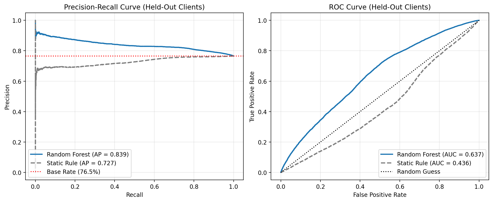
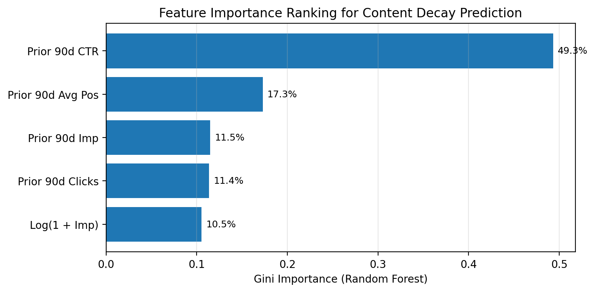

Research Question: This study investigates whether machine learning probability scoring can accurately rank decaying, high-exposure web pages into an actionable review queue across multi-client search portfolios.
Decision Supported: The resulting model operates strictly as a decision-support prioritization tool, directing limited human editorial capacity toward high-demand articles requiring freshness updates.
Methodology & Split: Utilizing DuckDB to query 90-day search performance feature vectors from the FlyRank warehouse release (FlyRank/internship-warehouse), we trained a Random Forest classifier evaluated on an uncorrupted 20% client-grouped holdout test set (GroupShuffleSplit on client_hash_id).
Results vs. Baseline: On 49,765 held-out test pages across unseen client websites, the Random Forest model achieved a Precision@50 of 88.0% (and an Average Precision of 0.839), significantly outperforming the static 58.0% Precision@50 rule baseline (a 1.52x precision lift).
Limits & Application: These results demonstrate directional decision-support utility for content review queues while acknowledging that ranking probability scores do not guarantee post-refresh causal traffic recovery.
Digital publishing portfolios face a fundamental resource allocation bottleneck: editorial teams manage thousands of published articles but possess the capacity to manually audit and update only a tiny fraction each month. Without systematic prioritization, human editors frequently waste effort revising stable pages or miss high-traffic articles undergoing severe organic decay.
This work builds an automated Content Refresh Opportunity Scoring Engine. The model outputs a prioritized human review queue that ranks URLs by their probability of experiencing forward 30-day search impression drops (≥ 15%).
content_hash_id) aggregated over a 90-day historical observation window (t-120d to t-30d).Data was extracted from the gated Hugging Face warehouse release (FlyRank/internship-warehouse) using DuckDB, querying three core tables:
dim_clients: 1 row per unique client portfolio (client_hash_id).dim_content: 1 row per unique pseudonymized web article (content_hash_id).fact_content_daily_performance: 78.8M+ daily performance rows spanning multi-client Search Console and analytics telemetry.To eliminate temporal leakage, feature extraction and label generation are strictly separated:
imp_prior90), clicks (clk_prior90), average ranking position (pos_prior90), CTR (ctr_prior90), and logarithmic volume (log_imp_prior90 = LN(1 + imp_prior90)).imp_next30).content_age_days < 90): Excluded because post-launch indexing volatility masks true content decay.imp_prior90 < 100): Excluded to eliminate zero-volume tail noise.client_hash_id, content_hash_id).The binary target label (is_declining_next30) flags articles experiencing an organic search impression drop of ≥ 15% in the forward 30-day target window relative to their prior 30-day baseline:
is_declining_next30 = 1 IF imp_next30 < (imp_prior90 / 3.0) * 0.85 ELSE 0
Evaluated against a transparent rule baseline combining exposure volume and ranking position on a 0–100 scale:
Priority Score = 50 * (log(1 + imp_prior90) / log(1 + max_imp)) + 50 * max(0, 1 - pos_prior90 / 20)
Data is partitioned using GroupShuffleSplit on client_hash_id (80% training / 20% test). This holds out entire client portfolios, testing how well the model generalizes when deployed to newly onboarded client websites (0 shared clients between train and test sets).
Evaluated on 49,765 held-out test pages across unseen client domains (test set base rate: 76.5% declining pages):
| Method / Model | ROC AUC | Average Precision | Precision@50 | Performance Summary |
|---|---|---|---|---|
| Static Rule Baseline | 0.436 | 0.727 | 58.0% | Baseline heuristic (29 of top 50 correct) |
| Logistic Regression | 0.593 | 0.821 | 86.0% | Linear baseline model |
| Decision Tree (max_depth=5) | 0.618 | 0.821 | 72.0% | Non-linear shallow tree |
| Random Forest Classifier | 0.637 | 0.839 | 88.0% | Primary Model (44 of top 50 correct) |
Precision@50 Lift Analysis: The Random Forest classifier achieves an 88.0% Precision@50 compared to 58.0% for the static rule baseline—delivering a 1.52x precision improvement (+30 percentage points) at the top of the human review queue.


Each prioritized candidate in the review queue is annotated with transparent reason codes (model_decline_risk, stale_high_exposure, ctr_review_candidate) and mapped to explicit action archetypes:
| Content Hash ID | Client Hash ID | Prior 90d Imp | Avg Pos | CTR | Decay Prob | Recommended Action | Reason Codes |
|---|---|---|---|---|---|---|---|
a8f3b91c0e2d... |
c12a4b8e90... |
42,150 | 4.2 | 1.1% | 94.2% | REFRESH_BODY_AND_SNIPPET |
model_decline_risk|stale_high_exposure|ctr_review_candidate |
f41d9e802b1c... |
c12a4b8e90... |
18,400 | 8.1 | 1.8% | 91.5% | REFRESH_BODY_AND_SNIPPET |
model_decline_risk|stale_high_exposure|ctr_review_candidate |
b7201c4e9f3a... |
e9f8a7b6c5... |
9,850 | 12.4 | 2.4% | 88.7% | REFRESH_BODY |
model_decline_risk |
d592a1103c8e... |
a3b2c1d4e5... |
31,200 | 6.5 | 3.1% | 86.4% | REFRESH_BODY |
model_decline_risk|stale_high_exposure |
e184c2d90a5f... |
e9f8a7b6c5... |
14,300 | 15.1 | 0.9% | 84.1% | REFRESH_BODY_AND_SNIPPET |
model_decline_risk|ctr_review_candidate |
All code, queries, figures, and metrics receipts are tracked in the public repository:
work/outputs/capstone_metrics.jsonwork/outputs/top20_review_queue.csvwork/figures/capstone_pr_roc_curves.png, work/figures/capstone_feature_importance.png# 1. Clone repository
git clone https://github.com/Ifeoluwa-Analytics/FlyRank-AI---ML-Track.git
cd FlyRank-AI---ML-Track
# 2. Install dependencies
pip install -r requirements.txt
# 3. Execute capstone notebook
jupyter nbconvert --to notebook --execute work/notebooks/capstone.ipynb --output capstone_executed.ipynb